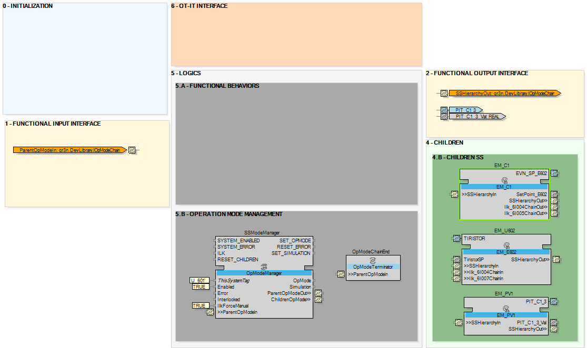
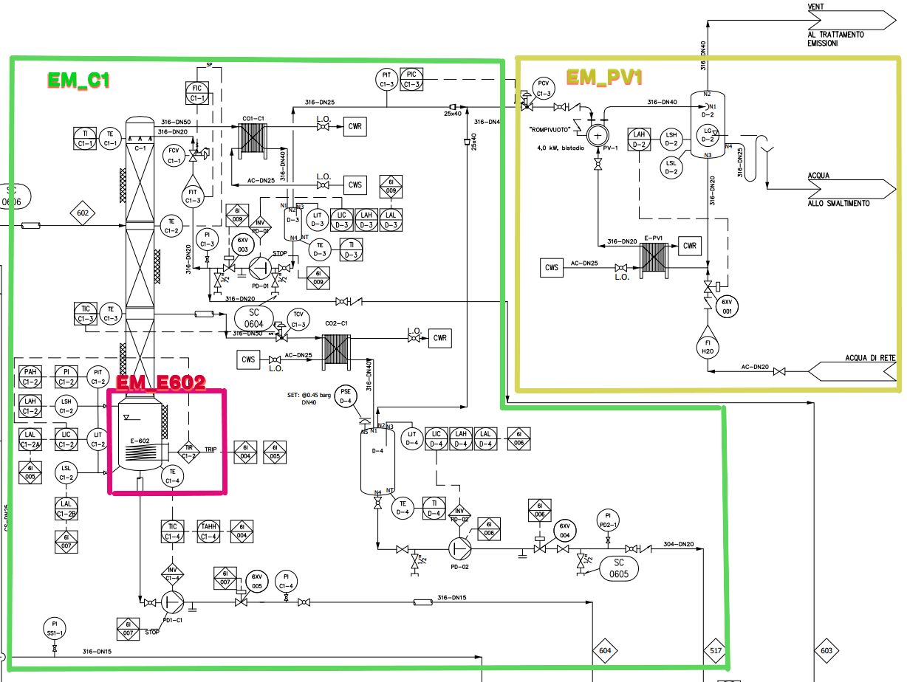

As the Unit 601 has been recognized as a child module of PC600, now, let’s model of this entity.
As specified in the design guidelines, the modeling procedure for any child module reflect the modeling procedure of the parent object. Therefore, all the steps previously outlined in developing the PC_600 CAT object will be methodically implemented in modeling the Unit601 object.
The internal structure of Unit 601 is depicted in the image below, showcasing its design and functionality:

Upon reviewing the Unit 601 object in comparison to the previously developed PC600 object, it is clear that the first distinction lies in the types of child objects identified for Unit 601.
After thoroughly analyzing the P&ID drawing and considering the ISA88 physical model structure, an opportunity to enhance further the organization of the Unit 601 has been identified. Let’s divide the unit into three equipment modules:
EM_C1
EM_E602
EM_PV1

This refinement aims to improve the model's clarity and functionality. It also facilitates a better understanding and analysis.
Additionally, like the PC_600 CAT object, only some of the internal components from the design guidelines template are remaining so the object meet the use case requirements.
The creation of the Unit 601 and Unit 602 were not mandatory (as they are similar to PC_600 CAT object) and the ISA88 standard mentions that the Unit section of a physical model is optional and could be excluded. However, it has been decided to include them in this example to demonstrate the application design thoroughly within EcoStruxure Automation Expert.
Finally, for the same reason that lead to detail only the Unit 601 in the Children topic, only one equipment module from the Unit 601 will be detailed in this document. This equipment module is EM_C1.